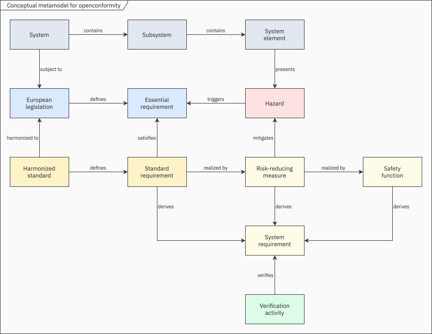
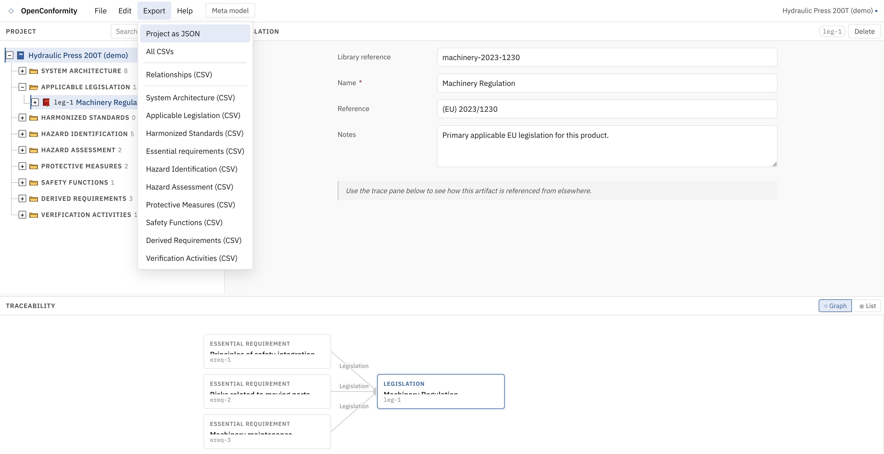

About
Knowledge about CE marking is publicly available in European directives, regulations, and guidelines. OpenConformity is an initiative to develop a free, open-source tool that applies this knowledge to support the work of CE marking under European product legislation. The idea is to provide a browser-based tool that runs entirely client-side, with no installation or account required.
Concept
The idea behind the tool is to offer an approach to CE marking using concepts borrowed from the domain of Systems Engineering (SE). The CE marking work itself will be modeled using entities with semantic relationships between them, where each entity carries its own attributes. The semantic relationships will represent the meaningful connection between the different types of entities, defining how they interact and relate to each other. The tool will support entities such as legislations, standards, hazards, risk-reducing measures, safety functions, system requirements, and verification activities.

The artefacts generated in the tool, such as applicable essential requirements, identified hazards, and requirements, will be exportable, intended as input to the engineering documents that the user assembles under their own quality system. The idea behind the tool is to aid the user in producing the meaningful artefacts of the CE marking work, rather than to generate reports.
The user interface will be based on a tree-based navigator pane, an editor pane, and a relationship pane. The tool will be built using vanilla HTML, CSS, and JavaScript ES modules, with no framework, no build step, and no package manager. Projects will be saved as a single JSON file. Each artefact can be exported as CSV.

Status
In development.
GitHub
Source code will be made public when ready.